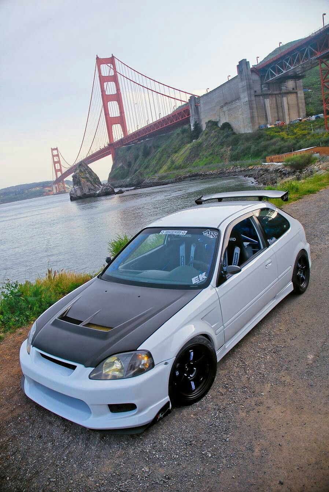
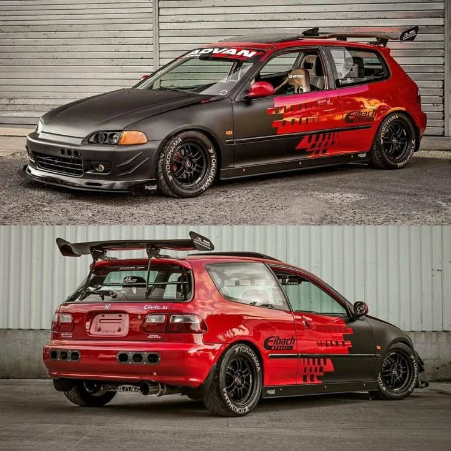
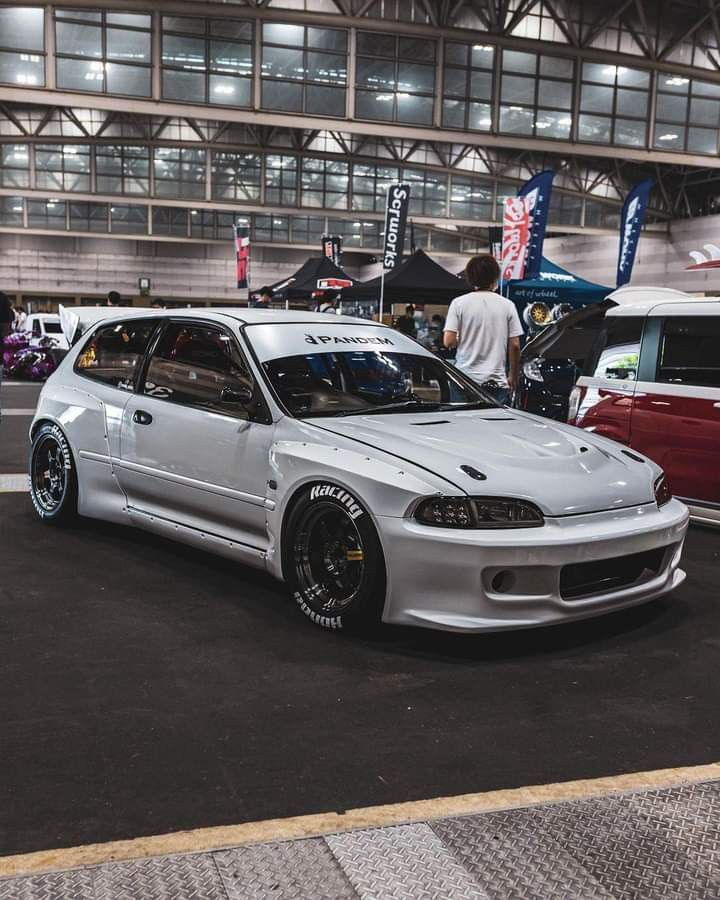

Философия: Гражданский спортивный хэтчбек
Пятое поколение Honda Civic (кузова
EG для хэтчбека,
EH для седана,
EJ для купе) вывело модель на новый уровень. Из экономичного компакта Civic превратился в
икону молодежной автомобильной культуры и доступного тюнинга. Его философия — легкий, компактный кузов, ремонтопригодная техника и огромный потенциал для доработок. Это был идеальный «первый автомобиль» для энтузиаста, предлагавший спортивные эмоции за разумные деньги.
Дизайн и конструкция: Идеальные пропорции
- Дизайн стал более обтекаемым и агрессивным по сравнению с угловатым четвертым поколением. Хэтчбек EG6 с его клиновидным профилем и высокой посадкой считается одним из самых красивых в истории модели. Компактные габариты и низкий центр тяжести предопределили его будущее в автоспорте.
- Появилась знаменитая вариантность кузовов: 3-дверный хэтчбек (самый популярный для тюнинга), 5-дверный хэтчбек, 4-дверный седан и 2-дверное купе. Простая и прочная конструкция кузова с широкими возможностями для доработок подвески стала ключом к успеху.
- Конструкция — передний привод, простая и эффективная подвеска: спереди стойки McPherson, сзади — зависимая торсионная балка (на большинстве версий) или независимая многорычажная (на спортивных комплектациях SiR). Последняя, известная как подвеска на двойных поперечных рычагах (Double Wishbone), обеспечивала феноменальную для гольф-класса управляемость и устойчивость.
Техническая основа: Золотой фонд атмосферных моторов
Под капотом стояли легендарные рядные 4-цилиндровые двигатели, ставшие основой для тюнинга. Эта платформа прославилась своей надежностью и отзывчивостью, а модульность конструкции позволяла относительно легко менять силовые агрегаты.
- D-серия (D15B, D16Z6): Атмосферные моторы объемом 1.5-1.6 л (90-130 л.с.). Идеальный баланс надежности, экономичности и потенциала. Мотор D16Z6 с системой SOHC VTEC (125 л.с.) был особенно популярен благодаря хорошей тяге на низких оборотах и характерному «подхвату» после включения системы изменения фаз.
- B-серия (B16A, B18C): Сердце спортивных версий. B16A (1.6 л DOHC VTEC, 160-170 л.с.) в хэтчбеке Civic SiR II (EG6) — это символ эпохи. Высокооборотный (красная зона с 8000 об/мин), с феноменальной литровой мощностью и фирменным звуком включения VTEC. Позже появился и B18C от Integra, который стал мечтой для свапа (замены двигателя).
Автомобиль был невероятно легким (около 1000 кг), что в паре с мощным мотором давало выдающуюся динамику и остроту откликов, недоступную более тяжелым современникам. Именно эта простота и чистота ощущений легли в основу культа.


Новый облик и глобальная платформа
Шестое поколение (кузова
EK для хэтчбека/седана,
EM для купе) стало эволюционным, но важным шагом. Автомобиль вырос в размерах, стал безопаснее и комфортнее, сохранив спортивный характер.
- Дизайн стал более плавным и «органичным», ушли резкие грани, появилась более сложная пластика кузова.
- Сохранилась вариативность кузовов: 3-дверный хэтчбек (самый желанный), 5-дверный хэтчбек, 4-дверный седан и купе.
- Платформа стала более жесткой, улучшилась шумоизоляция.
Технические новшества: VTEC, Type R и безопасность
- Двигатели: Линейка моторов продолжила развитие. Атмосферные D-серии (D14, D15, D16) остались основой. Легендарный B16A2 (160 л.с.) ставился на хэтчбек Civic SiR (EK4).
- Венец эволюции — Honda Civic Type R (EK9) 1997-2000: Первый Civic с легендарной аббревиатурой Type R. Это был специально доработанный 3-дверный хэтчбек с двигателем B16B (1.6 л DOHC VTEC, 185 л.с.), 5-ступенчатой КПП с близкими передачами, винтовой подвеской, легкосплавными дисками, рециркулирующим рулевым управлением и минималистичным салоном с ковшеобразными сиденьями Recaro красного цвета. Это идеальный «гоночный автомобиль для дорог» с завода.
- Появились подушки безопасности, ABS, улучшилась пассивная безопасность.
Культовые версии и рынки
Помимо Type R, особым спросом пользовались:
- Civic VTi (EK4) с двигателем B16A2 — «младший брат» Type R, более доступный, но не менее азартный.
- Civic Ferio (седан) с мотором B18B — «семейный спортсмен».
- Для рынка США — купе Civic Si (EM1) с мотором B16A2, единственная версия с VTEC, официально поставлявшаяся в Штаты.
Феномен популярности в тюнинг-среде
Civic EG и EK стали
главными героями мировой тюнинг-культуры, уличных гонок и дрифта благодаря:
- Доступности и низкой цене как самого автомобиля, так и запчастей.
- Огромному потенциалу для тюнинга. Пространство под капотом позволяло делать свапы (установку других двигателей), самый популярный — B18C от Integra или K20A от более новых Honda. Культура «engine swap» расцвела именно на этих поколениях.
- Легкому и прочному кузову с почти идеальным распределением веса.
- Простоте конструкции, позволявшей проводить модификации в гараже.
Плюсы и минусы владения
Плюсы:
- Невероятная острота управляемости и «единение с дорогой».
- Высокооборотные атмосферные двигатели VTEC с неповторимым характером и звуком.
- Огромное комьюнити, море информации по ремонту и тюнингу, доступность запчастей.
- Культовый статус, особенно для версий SiR (EG6, EK4) и Type R (EK9).
- Удивительная экономичность (атмосферные версии).
Минусы и «болевые точки»:
- Коррозия: Арки, пороги, днище — слабые места, особенно для EG.
- Возраст и износ: Всем резинотехническим изделиям, подвеске, тормозам требуется замена.
- «Зверский» тюнинг: 95% автомобилей на рынке имеют кривые доработки, некачественные свапы, убитые двигатели и «косячный» внешний вид.
- Повышенное внимание ГИБДД и угонщиков.
- Двигатели VTEC: Требуют качественного масла и высоких оборотов. При неправильном обслуживании возможны проблемы с системой VTEC, прогар клапанов.
Заключение
Honda Civic EG и EK — это не просто автомобили 90-х, а фундамент глобальной тюнинг-культуры. Их магия — в доступной гениальности: легкий кузов, ремонтопригодная конструкция и взрывные атмосферные моторы VTEC воспитывали настоящих водителей. Пиком философии стал первый Civic Type R (EK9) — готовый гоночный автомобиль для дорог.
Эти поколения сформировали язык тюнинга и стали героями уличной культуры. Сегодня они — живая классика, чей драйверский дух и чистый дизайн не теряют актуальности. Владеть таким Civic — значит хранить частицу настоящей автомобильной истории.

 89081317488
89081317488

 8(908)131-74-88
8(908)131-74-88.svg) fayther2@yandex.ru
fayther2@yandex.ru